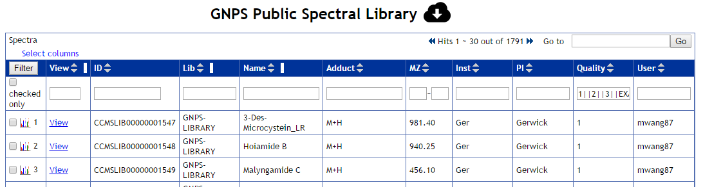
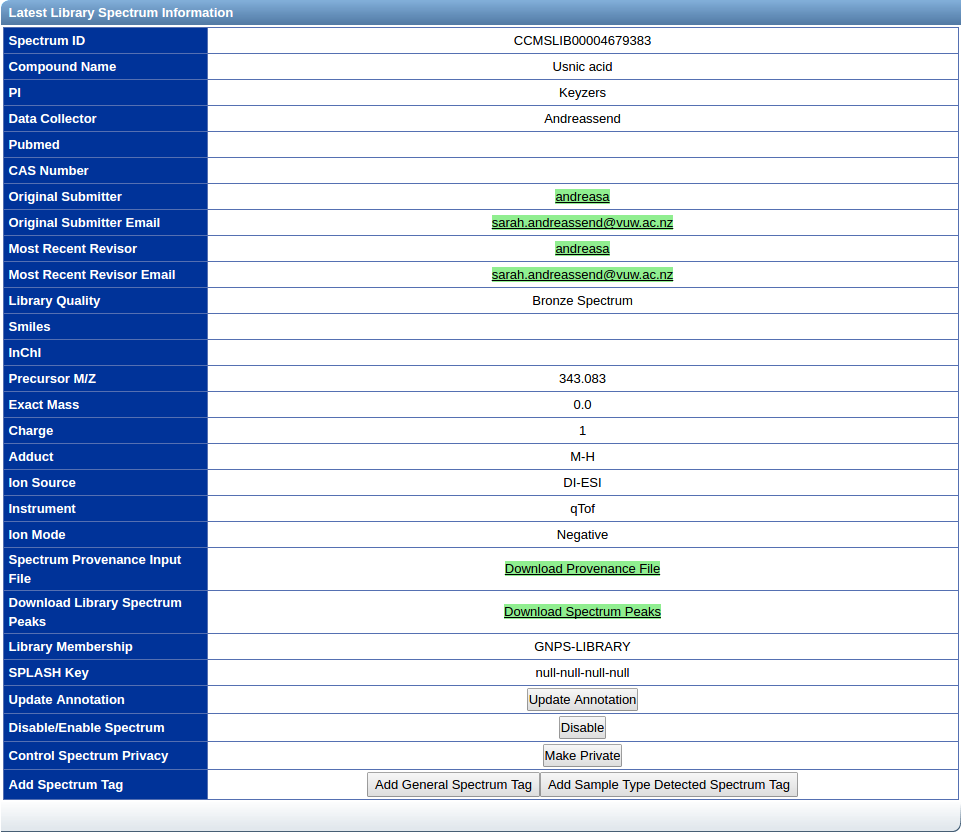
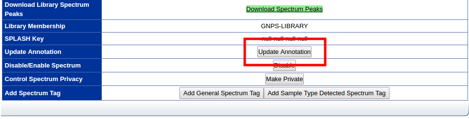
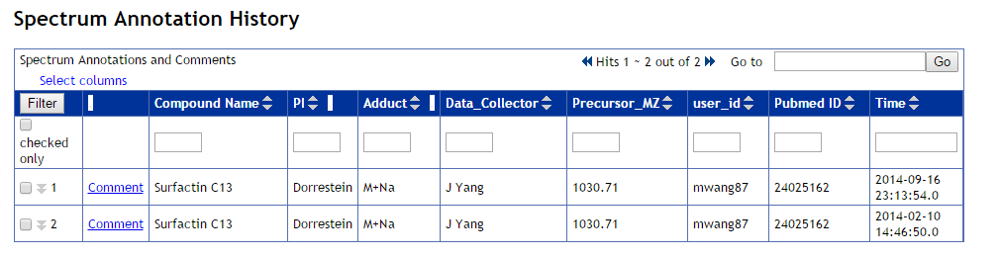

Browsing Reference Spectral Libraries
GNPS Community Spectral Libraries
The GNPS public spectral libraries can be browsed, explored, and downloaded. The list of all public spectral libraries is listed here.
GNPS Community Library
There are several spectral libraries available at GNPS. They are either imported from the community (e.g. Massbank ), provided directly to GNPS as a large collection of annotated spectra (e.g. Pesticide Library ), or aggregated from single MS/MS additions from the entire community (e.g. GNPS-Community ).
Clicking on a library brings users to a list of all MS/MS spectra that are in that library. The most up to date annotation is listed.
Most Recent Contributions
At the bottom of the list of all spectral library, the most recent contributions of annotation library spectra are listed in reverse chronological order. These generous contributions from members of the community are just the latest amongst the thousands of MS/MS spectra deposited at GNPS.
Library Spectrum List
Users will be presented with a list of all spectra in the library. Each line represents a different entry in the library and displays the most recent annotation for that particular spectrum.

Users are able to download the update to date version of each particular library by clicking the download icon next to the library header.
Individual Spectrum View
Users will be presented with a spectrum page that includes at the top an interactive spectrum viewer as well as the most recent spectrum information.

Updating Spectrum Annotation
In the event that annotations are incomplete or incorrect, users have the option to correct/update annotations of the library spectra. On each library spectrum page there is an update button to update the annotation.

Spectrum Annotation History
Revision history of the spectrum. Sorted in reverse chronological order, with most recent revisions first. To comment on a specific revision of the annotations, users can click the comment button for each annotation row. To view comments on each annotation, users can click the double down arrow at the left of the row.
